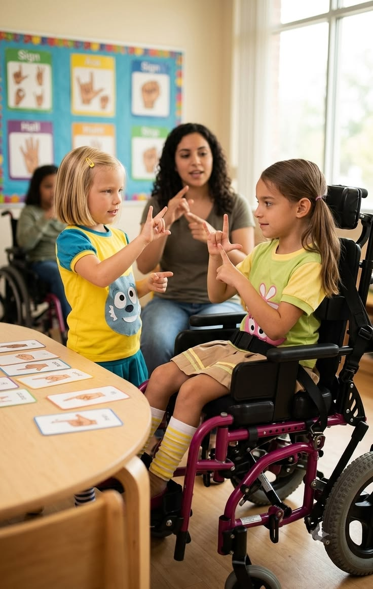

Learn about our history, mission, and the communities we serve.
Mzamo Child Guidance & Training Initiative of KZN was established in January 1981 in response to the significant need for services for vulnerable children with disabilities, particularly within Black communities.
The organisation was founded following efforts by the Social Workers Association to respond to these critical needs.
We focus on the child in conjunction with the family and community, using an inter-disciplinary approach to ensure proper assessment, referral, and placement for maximum development and gain.
We use a holistic approach that encompasses assessments by various professionals, including:
